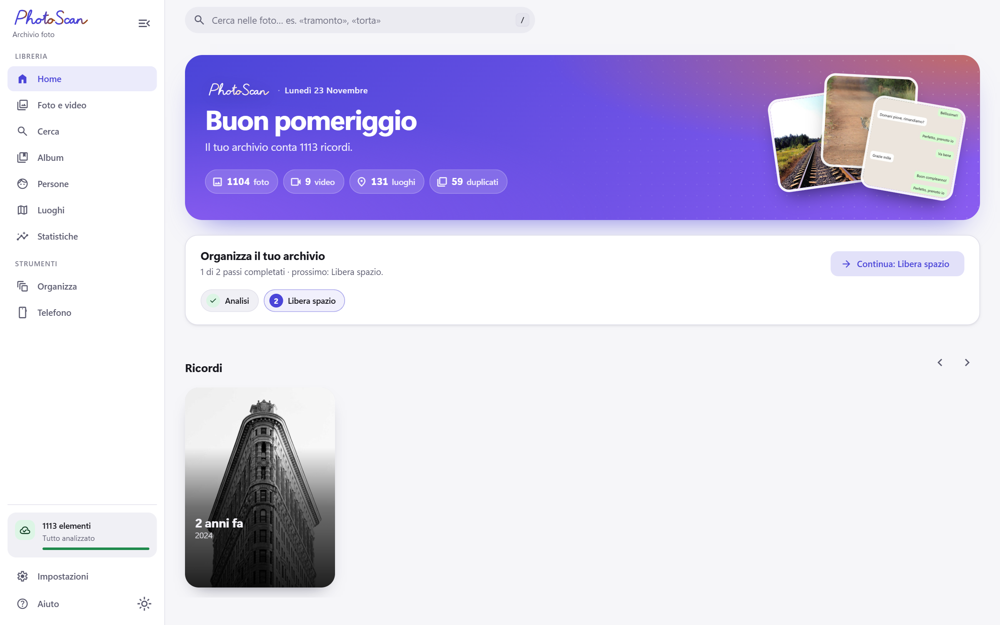
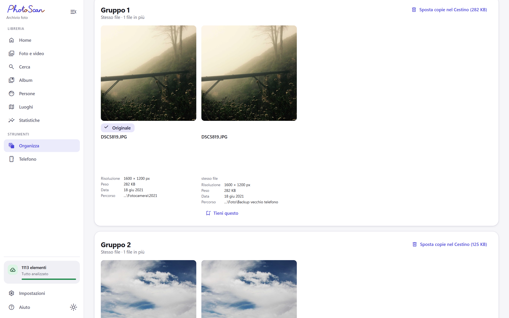
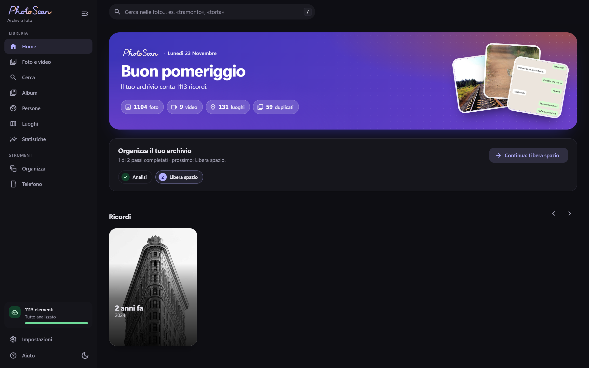

Schermate
Alcune schermate dell'app, create su una libreria di esempio con foto Unsplash.






Metti ordine in anni di foto e video. PhotoScan trova i duplicati, riconosce cosa c'è in ogni foto e ti propone una struttura di cartelle per anno, mese ed evento. Tutto gira sul tuo PC: nessuna foto viene caricata online.
Pensato per archivi grandi, con migliaia di file sparsi in cartelle diverse e nomi poco utili.
Crea una cartella per ogni periodo e contesto, ad esempio 2024/03 - Vacanza al mare. Tu decidi cosa applicare.
Scrivi «tramonto», «torta» o «neve» e trovi le foto giuste anche senza tag o nomi file significativi.
Trova copie esatte e foto quasi uguali. Scegli tu quale tenere: niente viene cancellato al posto tuo.
Usa i dati GPS delle foto per mostrarle sulla mappa e trovare i viaggi dimenticati.
Raggruppa i volti ricorrenti e dai loro un nome. Il riconoscimento si attiva solo se lo vuoi.
Si apre in una finestra dedicata dall'icona sul Desktop. Interfaccia chiara o scura, adatta anche al telefono.
Alcune schermate dell'app, create su una libreria di esempio con foto Unsplash.



Quattro passi, sempre in ordine. Puoi fermarti e riprendere quando vuoi.
La regola di base: PhotoScan non cancella mai nulla.
_Duplicati), mai eliminati.Servono Python 3.13 e, consigliata, una scheda grafica NVIDIA. Senza NVIDIA funziona comunque, ma più lentamente.
cd PhotoScan # cartella estratta dal download
python -m venv .venv
.\.venv\Scripts\activate
pip install torch torchvision --index-url https://download.pytorch.org/whl/cu126 # GPU NVIDIA
pip install -r requirements.txt
winget install Gyan.FFmpeg # facoltativo, per i videoAl primo utilizzo viene scaricato il modello di riconoscimento (circa 400 MB, una sola volta).
Poi avvia PhotoScan con il comando .\.venv\Scripts\pythonw.exe -m fotoscan.desktop o dall'icona sul Desktop.
No. Analisi, ricerca e organizzazione avvengono sul tuo computer. L'unica connessione è il controllo delle nuove versioni, che puoi disattivare.
No. Le originali sono in sola lettura e i duplicati vengono spostati, non eliminati. Decidi tu cosa tenere.
Oltre allo spazio del programma e del modello di riconoscimento, il catalogo e la cache crescono con il numero di file. Il progetto è pensato per archivi di circa 200 GB e 14.000 file.
Sì. Chiudendo l'app si ferma e alla riapertura riprende dai file non ancora elaborati.
Foto JPEG, PNG, HEIC (con il supporto incluso) e video. I video richiedono FFmpeg. HEIC e TIFF nel browser sono mostrati in versione JPEG generata dal programma.
Le nuove versioni si trovano nelle Release di GitHub e nelle Impostazioni dell'app. L'aggiornamento si installa alla riapertura, con copia di riserva.
No. È disattivato di default e si attiva dalle Impostazioni.
| Sistema | Windows 10 o 11 |
|---|---|
| Python | 3.13 |
| Scheda grafica | NVIDIA consigliata. Funziona anche solo con la CPU, più lentamente. |
| Browser | Microsoft Edge (già presente su Windows) oppure Google Chrome |
| Spazio | Alcuni GB per programma e modello, più lo spazio del catalogo |